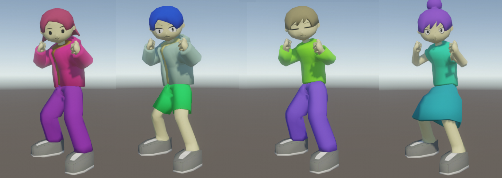
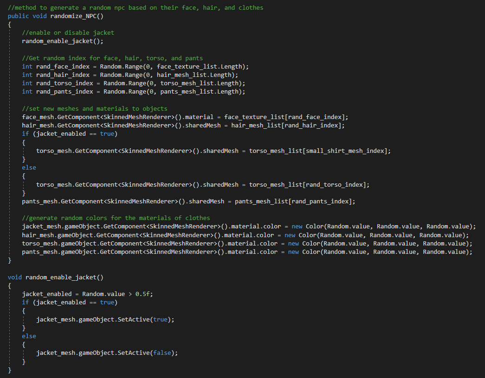
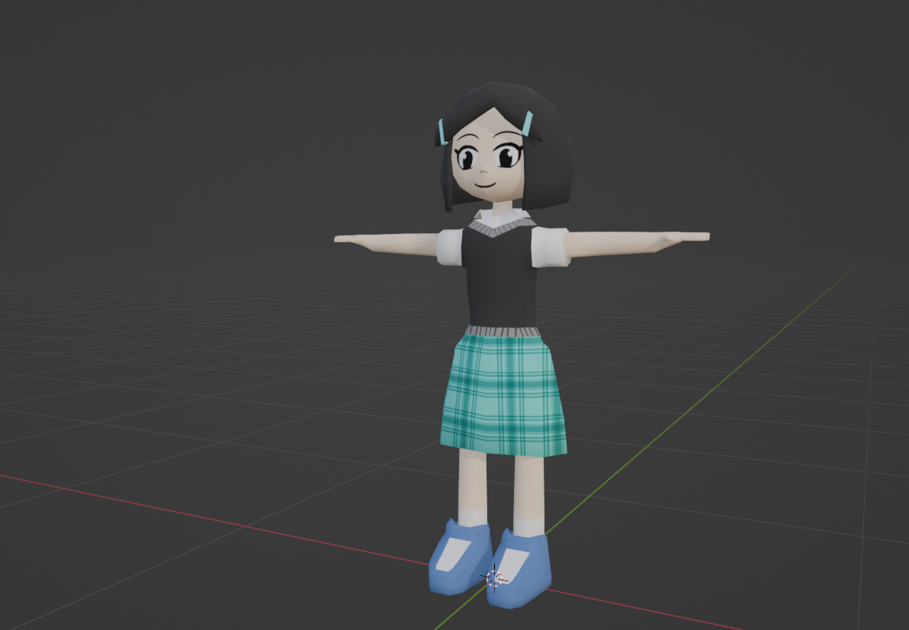
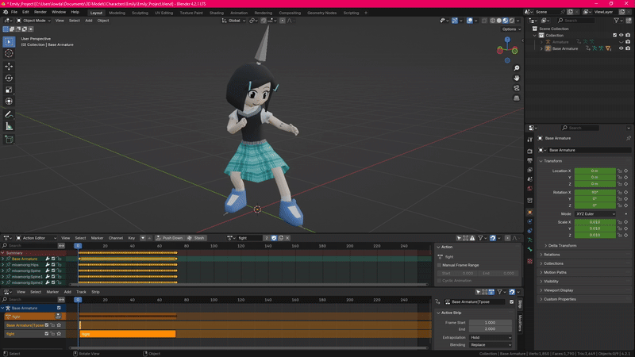
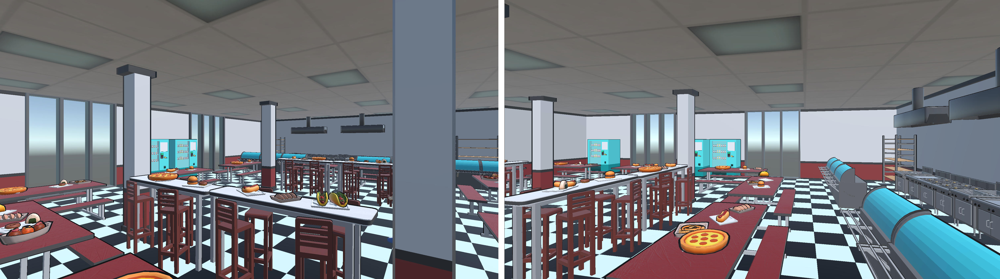
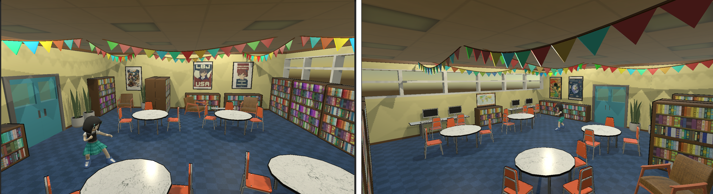
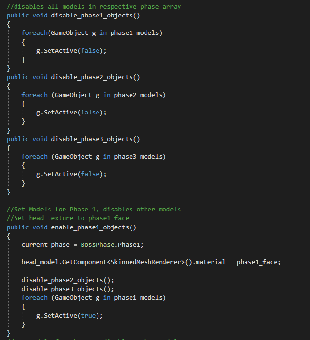
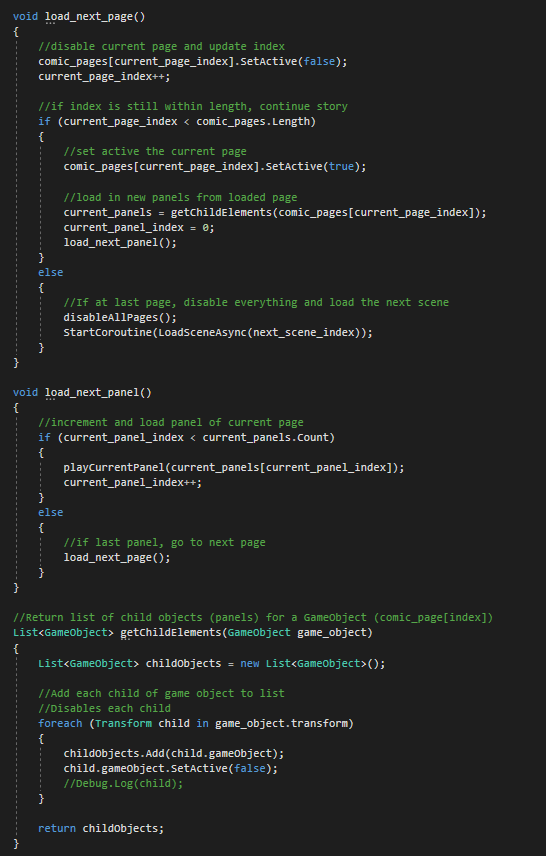

Kwyjibo Adventure
Gameplay
Planned Release Date: March 2025
Project Files: (Private) Github Repository
Overview
Duration: 6 months |
Tools: Unity, Blender, Mixamo |
Team Size: 5
Roles: 2D Artist, 3D Artist, Environment Design, Technical Artist, Writer
Art
Programming
Narrative
A 3d turn-based game where you play as Emily, fighting with a yo-yo against bullies in school. This is my Capstone project for my Games and Playable Media Masters program, working with a team in a defined role as the artist.
Goal
I took on the role of artist. Since this is primarily a 3d game, it gave me a chance to learn and use Blender. I also wanted to help programmers and designers on the technical art side, allowing easy implementation of models and characters.Development
Kwyjibo Adventure was my Capstone project for the Games and Playable Media Masters program, and it marked my first deep dive into 3D modeling and environment design. As the lead artist, I took on the responsibility of creating all the 3D assets, from characters to environments, while also supporting the team with technical art solutions to ensure smooth integration into Unity. This project was a journey of learning, problem-solving, and creativity, pushing me to master new tools and techniques.3D Modeling the Characters
The first major task was creating the 3D models for the characters. Since the game is a rogue-like, we needed a variety of NPC enemies with unique appearances. I started by designing a base body model in Blender, which would serve as the foundation for all NPCs. This approach allowed us to save time while maintaining consistency across characters.To add variety, I modeled different clothing options, face textures, and hairstyles. Using Mixamo, I auto-rigged the models and applied animations for attacks, getting hit, knockdowns, and idles. However, I quickly ran into a problem: the auto-weights from Mixamo caused clipping issues, where clothes and skin would intersect unnaturally.
To fix this, I manually adjusted the rig and weights in Blender, ensuring that each model moved s moothly without visual glitches. This process was time-consuming but essential for creating polished, nice looking characters.

Once the models were ready, I exported them to Unity, where I created an NPC Generator script. This script randomized the NPCs’ appearances by combining different clothing, hairstyles, and colors, resulting in a wide variety of enemies for the rogue-like gameplay.

Designing the Protagonist, Emily
Next, I focused on the protagonist, Emily. Unlike the NPCs, Emily needed a unique design that reflected her personality—studious, elegant, and determined. I modified the base body model to create her custom clothing, hairstyle, and face texture.Using Mixamo, I auto-rigged Emily and adjusted the weights in Blender to prevent clipping. Once exported, her model was ready for the character controller implemented by the programmers. Emily’s design became a standout element of the game, distinct in contrast to the other characters in the game



Creating the Environments
With the characters complete, I turned my attention to the environments. The game features three levels: a classroom, cafeteria, and library. I started by modeling props like desks, chairs, tables, and decor, ensuring each item fit the game’s toon-like aesthetic.However, we faced a performance issue with the Toon Shader we purchased from Unity. Applying the shader to every environment model was too resource-intensive. To solve this, I developed a creative workaround in Blender: I created duplicate models, slightly enlarged them, applied black materials, and inverted the normals. When imported into Unity, these black models acted as outlines, emulating the toon style without the performance cost.
Once the props were ready, I assembled the three levels, ensuring each environment felt distinct and immersive. The classroom was cluttered with desks and chalkboards, the cafeteria featured long tables and food trays, and the library was filled with bookshelves and study nooks. These environments not only enhanced the gameplay but also allowed me to design cohesive and visually appealing spaces.



Designing the Boss Bully
The final challenge was creating the Boss Bully, a character with three distinct phases. I used a modified and larger version of the base body model, adding overlaying models and textures to represent each phase.Like the other characters, I auto-rigged the boss in Mixamo and adjusted the weights in Blender. In Unity, I used the Animation Manager to organize the boss’s animations, making it easy for the programmers to implement. I also created a Phase Manager script that enabled and disabled the different models and textures for each phase, ensuring a seamless transition during the boss fight.


Creating the Narrative
To visually convey the story, I created 2D comic-style art that played at key moments in the game: the beginning, the ending, and between two levels. These comics illustrated Emily’s journey—from being a victim of bullying to discovering her magical yo-yo, gaining confidence, and ultimately confronting the consequences of her newfound power. The story culminates in a poignant moment where Emily realizes she has become a bully herself and decides to break the cycle, adding depth and emotional resonance to the game.The narrative design and comics served as a bridge between gameplay and story, illustrating how Emily—and by extension, the player—grows more powerful throughout the game. This parallel between narrative and gameplay reinforced the game’s themes and provided a satisfying emotional arc, making Kwyjibo Adventure not just a game about combat, but a story about growth, self-discovery, and breaking cycles.
Intro Comic
Outro Comic
To integrate the comics into the game, I wrote a custom C# script that allowed the comic pages and panels to progress sequentially with the press of a button. This script not only handled the timing and transitions between panels but also seamlessly integrated the comics into the game’s UI, creating a cohesive narrative experience. In the hierarchy, the panels are stored within "page" objects, and the script goes through each panel one by one. And when it reaches the end of the page, it disables the current page and loads the next one. By combining narrative design, 2D art, and UI scripting, I ensured that the story was an integral part of the gameplay, enhancing the player’s connection to Emily’s journey.

Reflections
Kwyjibo Adventure was a transformative project that allowed me to grow as a 3D artist and technical artist. I was a novice going into Blender, but this project gave me the opportunity to refine my skills in the software. From modeling characters and environments to solving performance issues and supporting the programming team, I tackled a wide range of challenges with creativity and determination.This project was also an exercise to collaborate in a team to simulate working in an indie game environment. We used tools like Jira and Discord to communicate and keep track of our progress. I tried my best to meet the needs of our designers and provide enough scripting to alleviate the workload of our programmers. This project allowed me to blend my skills in programming and in the arts.